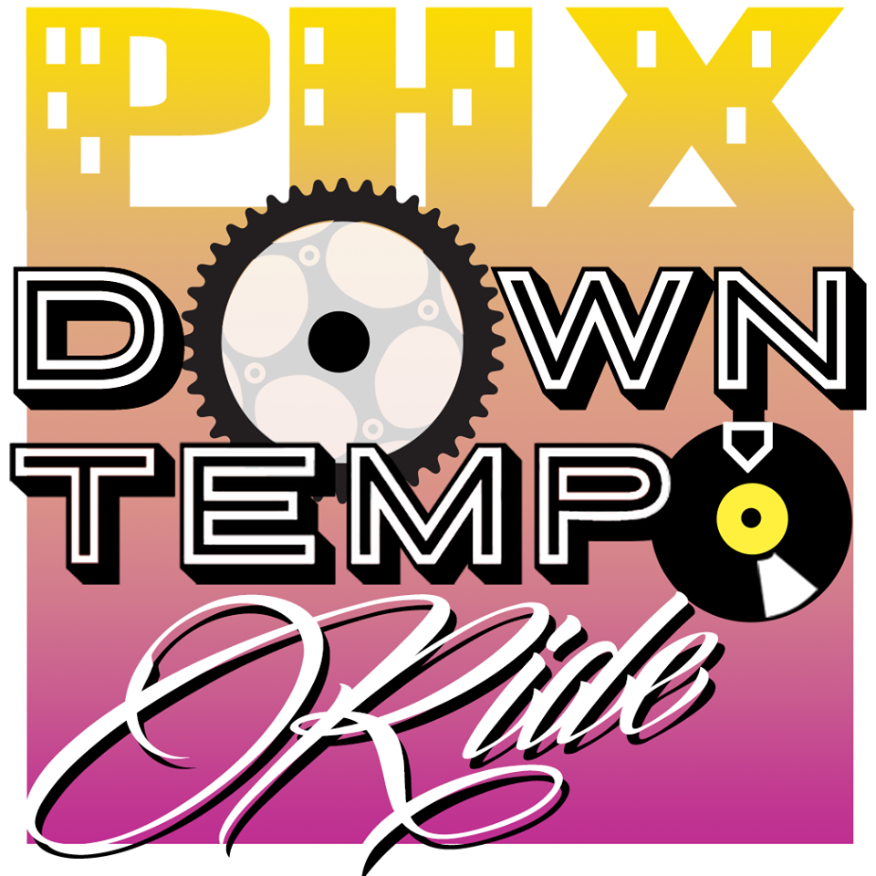

Ending at FilmBar for a to-be-announced bike movie!
Meet in Civic Space Park at 7 pm:
We ride for approximately an hour at a slow pace (around 8 mph), including a stop at an often 21+ bar.
The routes are designed to be accessible, although they may include short ramps (e.g. pedestrian bridges over the freeway). If you are nervous about riding on the streets then this is great introduction.
We welcome all types of bikes, but please be sure your bike is in good working order. People will usually have spare pump and tools, but we encourage you to bring extras if you have them. But if you do get a flat or mechanical issue on the ride (it happens to us all!) we won't leave you in the dust.
Other than that, come say hello, have a ride and grab a beer!